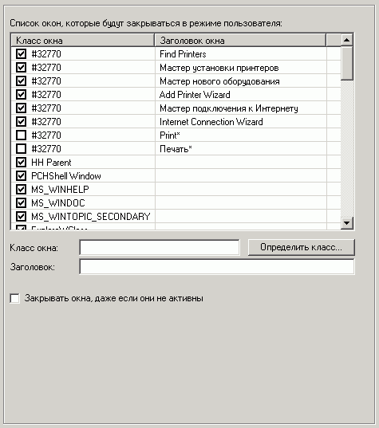

«десь можно установить окна, которые будут автоматически закрыватьс€, в случае если их запустит какое-либо приложение.
«апреты нужно устанавливать только на потенциально-опасные окна.
аждое окно характеризируетс€ своим уникальным именем класса и заголовком.
»м€ класса дл€ всех диалоговых окон "#32770".
ƒл€ определени€ класса окна можно воспользоватьс€ встроенной утилиткой.
≈сли не указать заголовок окна, а указать только класс, то будут запрещены все окна с этим именем класса. ≈сли же наоборот, то будут запрещены все окна с данным заголовком.
≈сли указать и им€ класса и заголовок, то будет запрещено только одно такое окно.
“акже можно использовать стандартные маски - * и ?
ѕо умолчанию закрываютс€ только активные окна, но включив опцию "«акрывать окна, даже если они не активны", можно добитьс€ закрыти€ и фоновых неактивных окон.